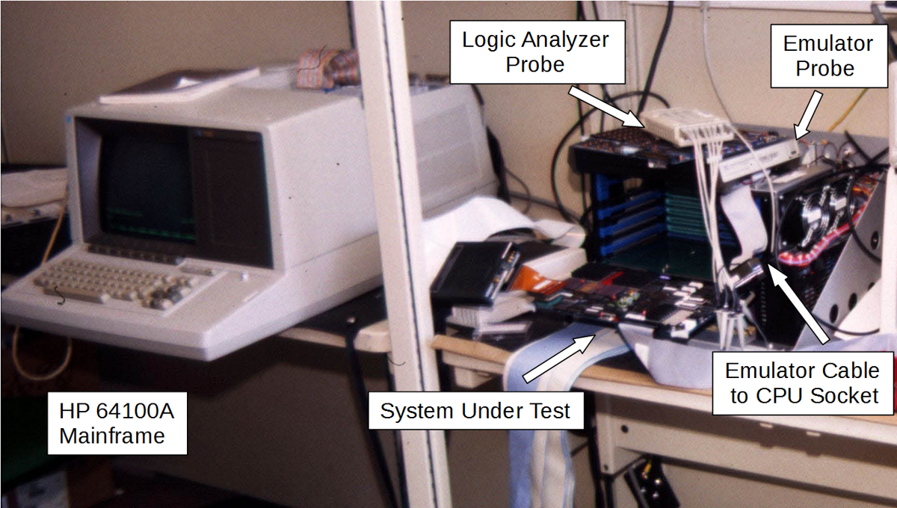
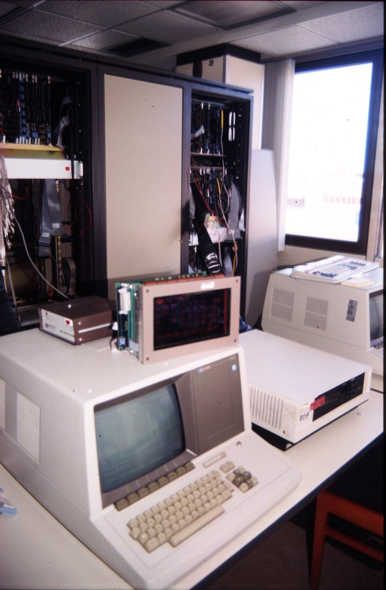

1979
Hewlett-Packard Logic Systems Division
HP 64000 Logic Development System
A microprocessor development workstation whose front panel is software — function keys relabeled on the CRT by the operating system

Overview
Deep dive
Media
